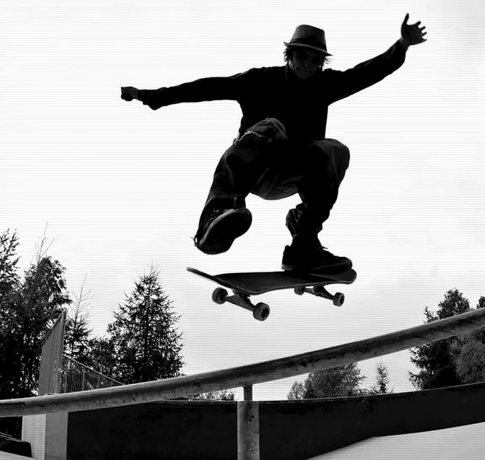
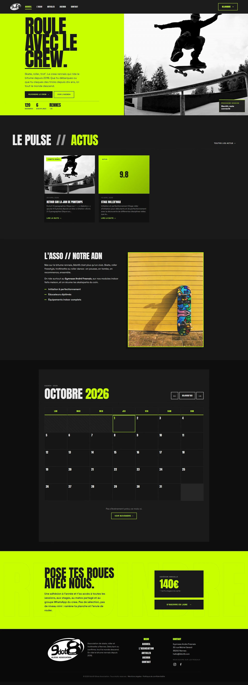
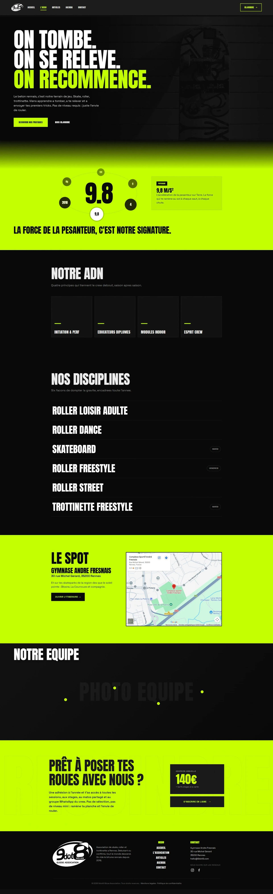
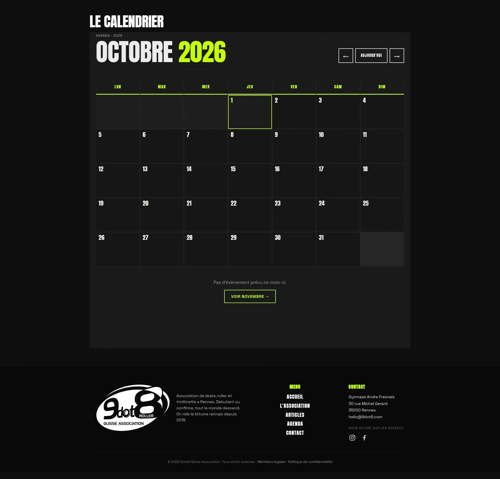
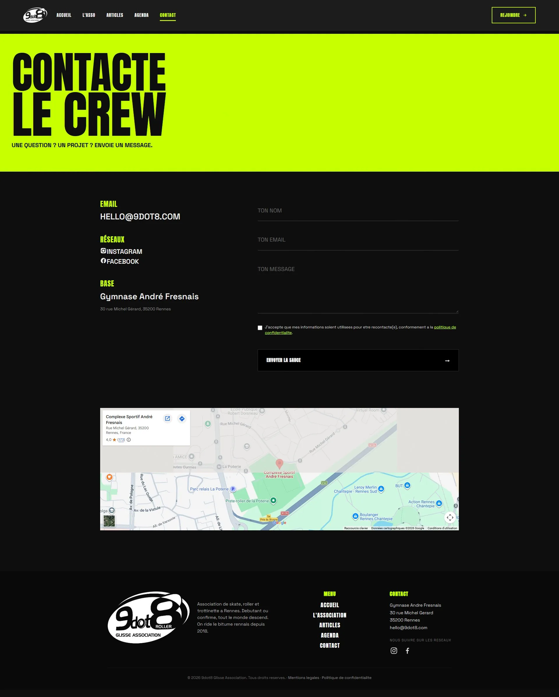

9dot8
Développement et intégration, 2026
Site vitrine pour une association de glisse urbaine rennaise, réalisé à deux dans le cadre d'un projet de groupe à MyDigitalSchool. Titouan s'est occupé des maquettes et de la relation avec l'association. J'ai pris tout le reste : le thème WordPress sur mesure, l'intégration des maquettes page par page, et un back-office en PHP écrit à la main pour que l'association gère ses contenus sans toucher au code.
Le tout livré en une semaine et demie. Le site n'a pas encore été mis en ligne par l'association, ce que vous voyez ici tourne sur une démonstration statique hébergée sur mon GitHub.

Les écrans
L'accueil
Le bloc jaune et la photo se partagent l'écran en deux, les chiffres de l'association tiennent dans le bas du bloc. Les actualités et la présentation s'enchaînent ensuite sur fond noir.

L'association
Un titre en trois temps posé sur une photo plein écran assombrie, qui reprend le slogan de l'asso.

L'agenda
La partie la plus travaillée. Le calendrier se parcourt mois par mois, et plus haut sur la page les sessions qui reviennent chaque semaine sont séparées des événements ponctuels.

Le contact
Formulaire avec case de consentement, et la carte du gymnase qui ne se charge qu'une fois les cookies tiers acceptés.

Le back-office
Les champs d'un événement, écrits en PHP à la main sur le thème. Une case pour les cours qui reviennent chaque semaine, puis la date, l'heure et le lieu, avec les explications rédigées pour les bénévoles qui saisissent.